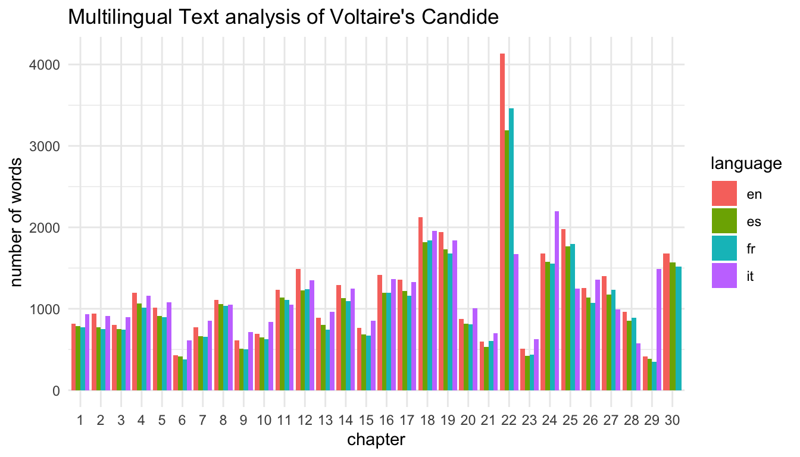
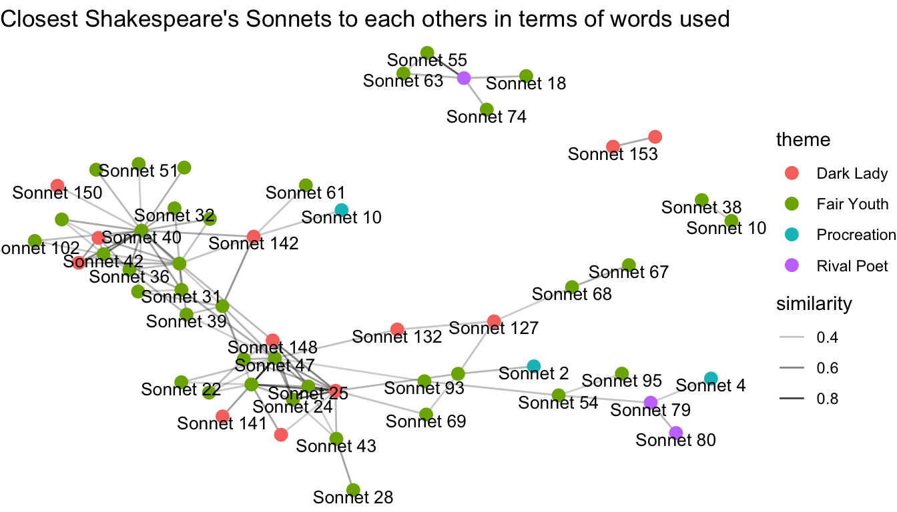
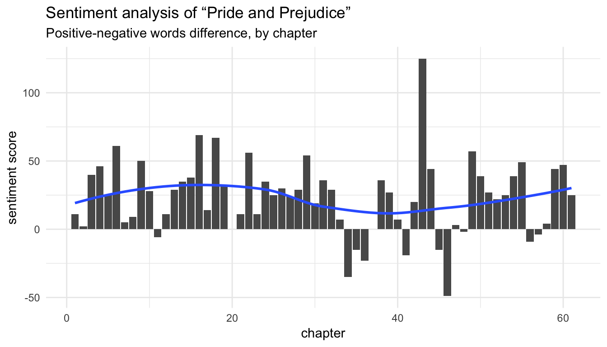

The digital library Wikisource, a sister projet of Wikipedia, hosts books in the public domain in almost all languages. More than 100’000 books are accessible in English, Spanish, French, German, Russian or Chinese.
The wikisourcer R package helps you download any book or page from Wikisource. The text is downloaded in a tidy dataframe, so it can be analyzed within the tidyverse ecosystem as explained for example in the book Text mining with R.
To download Voltaire’s philosophical novel Candide, simply paste the url of the table of content into the wikisource_book function. Note that the book is already classified by chapter with the page variable.
## # A tibble: 864 x 5
## text page language url title
## <chr> <int> <chr> <chr> <chr>
## 1 "" 1 en https://en.wikisourc… Cand…
## 2 In the country of Westphalia… 1 en https://en.wikisourc… Cand…
## 3 "The Baron was one of the mo… 1 en https://en.wikisourc… Cand…
## 4 My Lady Baroness, who weighe… 1 en https://en.wikisourc… Cand…
## 5 Master Pangloss taught the m… 1 en https://en.wikisourc… Cand…
## 6 "\"It is demonstrable,\" sai… 1 en https://en.wikisourc… Cand…
## 7 Candide listened attentively… 1 en https://en.wikisourc… Cand…
## 8 One day when Miss Cunegund w… 1 en https://en.wikisourc… Cand…
## 9 On her way back she happened… 1 en https://en.wikisourc… Cand…
## 10 "" 1 en https://en.wikisourc… Cand…
## # … with 854 more rowsMultiple books can easily be downoaded using the purrr package. For example, we can download Candide in French, English, Spanish and Italian.
library(purrr)
fr <- "https://fr.wikisource.org/wiki/Candide,_ou_l%E2%80%99Optimisme/Garnier_1877"
en <- "https://en.wikisource.org/wiki/Candide"
es <- "https://es.wikisource.org/wiki/C%C3%A1ndido,_o_el_optimismo"
it <- "https://it.wikisource.org/wiki/Candido"
urls <- c(fr, en, es, it)
candide <- purrr::map_df(urls, wikisource_book)Before making a text analysis, the text should be cleaned from remaining Wikisource metadata.
library(stringr)
library(dplyr)
candide_cleaned <- candide %>%
filter(!str_detect(text, "CHAPITRE|↑")) %>% #clean French
filter(!str_detect(text, "CAPITULO")) %>% #clean Spanish
filter(!str_detect(text, "../|IncludiIntestazione|Romanzi|^\\d+")) #clean ItalianWe can now compare the number of words in each chapter by language.
library(tidytext)
library(ggplot2)
candide_cleaned %>%
tidytext::unnest_tokens(word, text) %>%
count(page, language, sort = TRUE) %>%
ggplot(aes(x = as.factor(page), y = n, fill = language)) +
geom_col(position = "dodge") +
theme_minimal() +
labs(x = "chapter", y = "number of words",
title = "Multilingual Text analysis of Voltaire's Candide")
The wikisource_book function sometimes doesn’t work. It happens when the main url path differs from the ones of the linked urls or when the function fails to identify correctly the linked urls. This issue can easily be fixed using the wikisource_page function.
The wikisource_page function has two arguments, i.e. the Wikisource url and an optional title for the page. For example, we can download Sonnet 18 of William Shakespeare.
wikisource_page(wikiurl = "https://en.wikisource.org/wiki/Shakespeare%27s_Sonnets/Sonnet_18",
page = "Sonnet 18")## # A tibble: 35 x 4
## text page language url
## <chr> <chr> <chr> <chr>
## 1 "" Sonnet… en https://en.wikisource.org/wiki/…
## 2 "" Sonnet… en https://en.wikisource.org/wiki/…
## 3 "" Sonnet… en https://en.wikisource.org/wiki/…
## 4 XVIII. Sonnet… en https://en.wikisource.org/wiki/…
## 5 "" Sonnet… en https://en.wikisource.org/wiki/…
## 6 "" Sonnet… en https://en.wikisource.org/wiki/…
## 7 "" Sonnet… en https://en.wikisource.org/wiki/…
## 8 "" Sonnet… en https://en.wikisource.org/wiki/…
## 9 Shall I compare thee … Sonnet… en https://en.wikisource.org/wiki/…
## 10 Thou art more lovely … Sonnet… en https://en.wikisource.org/wiki/…
## # … with 25 more rowsThe wikisource_book function fails to download the 154 Sonnets from the main url “https://en.wikisource.org/wiki/Shakespeare%27s_Sonnets/”. We have to use wikisource_page to download them.
Let’s begin by creating a list of the 154 wikipages we want to download, using the R base function paste0.
Now we can download all the Sonnets with purrr.
## # A tibble: 3,618 x 4
## text page language url
## <chr> <chr> <chr> <chr>
## 1 "" Sonne… en https://en.wikisource.org/wiki/S…
## 2 "" Sonne… en https://en.wikisource.org/wiki/S…
## 3 "" Sonne… en https://en.wikisource.org/wiki/S…
## 4 HEAD OF EROS (CUPID),… Sonne… en https://en.wikisource.org/wiki/S…
## 5 "" Sonne… en https://en.wikisource.org/wiki/S…
## 6 "SONNETS. " Sonne… en https://en.wikisource.org/wiki/S…
## 7 I. Sonne… en https://en.wikisource.org/wiki/S…
## 8 "" Sonne… en https://en.wikisource.org/wiki/S…
## 9 "" Sonne… en https://en.wikisource.org/wiki/S…
## 10 "" Sonne… en https://en.wikisource.org/wiki/S…
## # … with 3,608 more rowsWe can make a text similarity analysis. Which sonnets are the closest to each others in terms of words used?
library(widyr)
library(SnowballC)
library(igraph)
library(ggraph)
sonnets_similarity <- sonnets %>%
filter(!str_detect(text, "public domain|Public domain")) %>% #clean text
tidytext::unnest_tokens(word, text) %>%
anti_join(tidytext::get_stopwords("en")) %>%
anti_join(data_frame(word = c("thy", "thou", "thee"))) %>% #old English stopwords
mutate(wordStem = SnowballC::wordStem(word)) %>% #Stemming
count(page, wordStem) %>%
widyr::pairwise_similarity(page, wordStem, n) %>%
filter(similarity > 0.3)
# themes by sonnet
theme <- data_frame(page = unique(sonnets$page),
theme = c(rep("Procreation", times = 17), rep("Fair Youth", times = 60),
rep("Rival Poet", times = 9), rep("Fair Youth", times = 12),
rep("Irregular", times = 1), rep("Fair Youth", times = 26),
rep("Irregular", times = 1), rep("Dark Lady", times = 28))) %>%
filter(page %in% sonnets_similarity$item1 |
page %in% sonnets_similarity$item2)
set.seed(1234)
sonnets_similarity %>%
graph_from_data_frame(vertices = theme) %>%
ggraph() +
geom_edge_link(aes(edge_alpha = similarity)) +
geom_node_point(aes(color = theme), size = 3) +
geom_node_text(aes(label = name), size = 3.5, check_overlap = TRUE, vjust = 1) +
theme_void() +
labs(title = "Closest Shakespeare's Sonnets to each others in terms of words used")
The wikisourcer package has been built to work within the tidyverse ecosystem. For example, we can easily make a tidy sentiment analysis of any book by chapter, as the chapters are automatically created in the page variable.
library(tidyr)
jane <- wikisource_book("https://en.wikisource.org/wiki/Pride_and_Prejudice")
jane_sent <- jane %>%
unnest_tokens(word, text) %>%
inner_join(get_sentiments("bing")) %>%
anti_join(get_stopwords("en")) %>%
count(page, sentiment) %>%
spread(key = sentiment, value = n) %>%
mutate(sentiment = positive - negative)
ggplot(jane_sent, aes(page, sentiment)) +
geom_col() +
geom_smooth(method = "loess", se = FALSE) +
theme_minimal() +
labs(title = "Sentiment analysis of “Pride and Prejudice”",
subtitle = "Positive-negative words difference, by chapter",
x = "chapter", y = "sentiment score")
More example of text analysis can be found in the book Text mining with R.